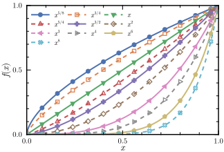

MakiePublication.jl

MakiePublication.jl is a Julia package for producing publication quality figures based on Makie.jl. It aims to provide equivalent functionalities as the Python package mpltex.
Features
- Provide a collection of custom themes for journal publishers: ACS, APS, RSC.
- Custom theme for making figures suitable for web pages.
- 15 color palettes based on well-known quality color schemes with special tweaked ordering for scientific publishing. (since v0.3.0)
- Support hollow markers. (since v0.3.1)
Installation
MakiePublication can be installed from the Julia REPL.
julia> # Press the key "]"
(@v1.8) pkg> add MakiePublicationShowcase of Themes
Note that all MakiePublication themes for journal publishers are essentially the same except the physical size of the figure. Hence following figures only different in the image sizes.
theme_acsfor American Chemical Society (ACS)
theme_apsfor American Physical Society (APS) and American Institute of Physics (AIP)

theme_rscfor Royal Society of Chemistry (RSC)

theme_webfor web presentation.
Contribute
- Star the package on github.com.
- File an issue or make a pull request on github.com.
- Pull requests of new schemes for other publishers are highly appreciated.
- Contact the author via email <lyx@fudan.edu.cn>.